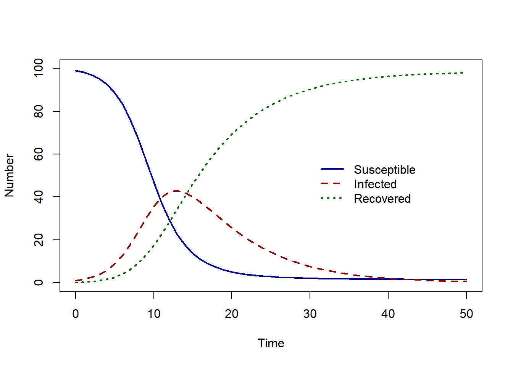

SIR model
We will extend the SI model to also include the possibility of recovering from infection. We have the ‘S’ and ‘I’ compartment as before. In addition, individuals can recover from infection and move to the recovered compartment, ‘R’.
We extend our flow diagram to include our extra compartment ‘R’ and a flow between ‘I’ and ‘R’, representing infected individuals recovering from infection.
Again, we can write down our assumptions in words. In this model, we have one additional equation representing the rate of change of the recovered population. The recovered individuals enter the recovered population at the same rate as individuals leaving the infected population. Therefore our recoveries will have a negative sign to indicate them leaving the infected population. \[ \begin{aligned} \mbox{susceptible population rate of change} & = - \mbox{infections} \\ \mbox{infected population rate of change} &= + \mbox{infections} - \mbox{recoveries} \\ \mbox{recovered population rate of change} &= + \mbox{recoveries} \end{aligned} \]
We have two different processes : infection and recovery.
We introduce a new parameter, the recovery rate \(\gamma\). The recovery rate is the inverse of the average infectious period. If the average infectious period is 7 days, then the daily recovery rate is \(1/7\).
The individuals recovering at each time step is the product the recovery rate, and the proportion of individuals in the \(I\) compartment at that time : \(\gamma I\).
For infections, we have \(\beta S I\) leaving \(dS/dt\) and entering \(dI/dt\).
For recoveries, we have \(\gamma I\) leaving \(dI/dt\) and entering \(dR/dt\).
\[ \begin{aligned} \frac{dS}{dt} & = - \beta S I/N \\ \frac{dI}{dt} &= \beta S I/N - \gamma I \\ \frac{dR}{dt} &=\gamma I \\ \end{aligned} \]
What do you think the solution to this system of ODEs will look like?
The susceptible population slowly decreases as the number of infected individuals increases. As individuals can recover, there is a peak in the number of infected individuals – this is the epidemic peak, followed by an increase in the number of recovered individuals.
In the next section, we will learn how to implement these models in R.
Exercise
- How many compartments are in the SIR model?
- How many parameters are in the SIR model (not including total population size \(N\))?
Solution
- There are three compartments : susceptible, infected and recovered.
- There are two parameters, the transmission rate \(\beta\) and the recovery rate \(\gamma\).